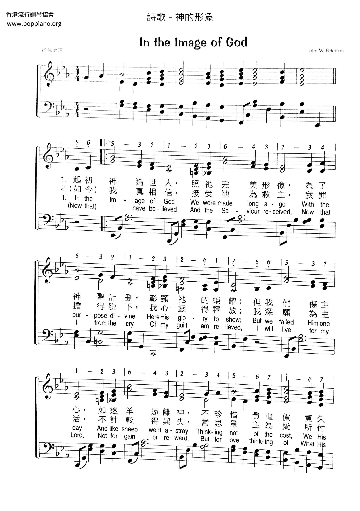

|
In the image of God |
神的形像詩集：美樂頌，40 |
|
In the image of God |
起初神造世人，照祂完美形像， |
|
神的形像 https://www.poppiano.org/sheet/?id=25911
 |
|
|
|
|

In the image of God 神的形像 https://www.youtube.com/watch?v=dOQLlAc_z1Q - In the Image of God From the 1971 album "The Peterson Trio
Sing Songs By Their Father John W. Peterson"
https://youtu.be/Kcx3ekVfsCM https://www.youtube.com/watch?v=1NueRMWC2bM
| Text: | In the Image of God |
| Author: | John W. Peterson |
| Tune: | [In the image of God, we were made long ago] |
| Composer: | John W. Peterson |
| Tune Information | |
|---|---|
| Name: | [In the image of God, we were made long ago] |
| Composer: | John W. Peterson |
| Copyright: | © 1957 by Singspiration, Inc. |
基督教教義（九）：神的形象
壹、人性中之神的形象1
在神所創造的萬物中，唯有人類是按神的形象而造的（創 1:26），這指人的：
「神說：我們要照著我們的形像、按著我們的樣式造人，使他們管理海裡的魚、空中的鳥、地上的牲畜，和全地，並地上所爬的一切昆蟲。」
一、 實體特性（人有甚麼，having）：指人有某些類似神的特性，如：道德正義感、非物質的靈部份、抽象的推理思考、創意藝術美感、自由意志等。
二、 功能任務（人做甚麼，doing）：指人能代表神去履行管理所有受造物的責任，亦有實踐管理萬物的權柄和能力；因此，人要照顧大地。
三、 關係經驗（人是甚麼，being）：指人能認識神及與神建立關係，人是關係的存有；因此，人有接受對話及回應上帝的天賦自由。
後來，當人犯罪墮落時，人性中之神的形象就被扭曲了（傳 7:29）。
「我所找到的只有一件，就是神造人原是正直，但他們尋出許多巧計。」
令人鼓舞的是，我們因耶穌的救贖，而得逐漸回復神的形象（林後 3:17-18）。
「主就是那靈；主的靈在那裡，那裡就得以自由。18 我們眾人既然敞著臉得以看見主的榮光，好像從鏡子裡返照，就變成主的形狀，榮上加榮，如同從主的靈變成的。」
耶穌這完美典範的特質就有以下這三項：
1.Having ：耶穌常彰顯祂對人的愛與關注（太 9:35-36）
「耶穌走遍各城各鄉，在會堂裡教訓人，宣講天國的福音，又醫治各樣的病症。36 他看見許多的人，就憐憫他們；因為他們困苦流離，如同羊沒有牧人一般。」
2.Doing ：耶穌完全順服遵從父神的旨意（約 4:34）
「耶穌說：我的食物就是遵行差我來者的旨意，做成他的工。」
3.Being ：耶穌與父神有完美的親密關係（約 17:21-22）。
「使他們都合而為一。正如你父在我裡面，我在你裡面，使他們也在我們裡面，叫世人可以信你差了我來。22
你所賜給我的榮耀，我已賜給他們，使他們合而為一，像我們合而為一。」
貳、神的形象：對人自己的意義
一、 尊嚴自重：我們是有價值的，即使是罪人，因仍有神的形象（創 9:6）。「凡流人血的，他的血也必被人所流，因為神造人是照自己的形像造的。」
二、 事奉服侍：我們是屬於神的，因此要將自己獻回給神（可 12:17a）。「17 耶穌說：該撒的物當歸給該撒，神的物當歸給神。」
三、 學效基督：我們要效法耶穌，因為祂是神形象的完美彰顯（羅 8:29）。「因為他預先所知道的人，就預先定下效法他兒子的模樣，使他兒子在許多弟兄中作長子。」
四、 忠心管家：我們要努力學習與工作，這樣才能好好履行神所託付的管理權（帖後 3:10）。「我們在你們那裡的時候，曾吩咐你們說，若有人不肯做工，就不可吃飯。」
五、
親近上帝：我們要與神建立親密的關係，這樣才得經歷完全的人性（雅4:8）。「你們親近神，神就必親近你們。有罪的人哪，要潔淨你們的手！心懷二意的人哪，要清潔你們的心！」
參、神的形象：對其他人的意義
神的形象是普世性的，存在於所有人裡面；因此，不論是甚麼人都應被尊重，如：
一、 種族、男女、階級（加 3:27-28）：「你們受洗歸入基督的都是披戴基督了。
28 並不分猶太人、希利尼人，自主的、為奴的，或男或女，因為你們在基督耶穌裡都成為一了。」
二、 耆老長者（利 19:32）：「在白髮的人面前，你要站起來；也要尊敬老人，
又要敬畏你的神。我是耶和華。」
三、 未出生者（詩 139:13, 16）：「我的肺腑是你所造的；我在母腹中，你已覆
庇我…..
16 我未成形的體質，你的眼早已看見了；你所定的日子，我尚未度
一日，你都寫在你的冊上了。」
四、 未婚的人（林前 7:32, 38）：「我願你們無所罣慮。沒有娶妻的，是為主的事罣慮，想怎樣叫主喜悅…..
38 這樣看來，叫自己的女兒出嫁是好，不叫他出嫁更是好。」
http://nspgmbc.org/nsdata/images/documents/Other/L9-God%20Image.pdf
無一朋友像主耶穌
(如果你看不到媒體播放器, 請直接點擊歌名)
無一朋友像主耶穌，祂比眾友更可靠；
快來到主施恩座前，祂正在向祢呼召。
無一朋友像主耶穌，你有痛苦祂同情；
祂用慈愛溫柔話語，安慰醫治破碎心。
無一朋友像主耶穌，若遇到敵人攻擊；
你切莫要失去勇氣，主必保佑你到底。
無一朋友像主耶穌，一生道路祂引領；
我們縱然向祂失信，主有憐憫赦罪恩。
副 歌
無一朋友像主耶穌，當你有艱難困苦；
無人如此可靠像主耶穌，事事都有祂看顧。
每一個聖樂的愛好者，大概都熟悉彼得生（John
W. Peterson, 1912 - ）這個名字，他是現代最偉大的聖樂作曲家，畢業芝加哥音樂院。第二次
這首聖詩是他受現實社會壓力排擠下，看到人情的冷酷，朋友背信，假面具後醜陋的人性，有感而發的作品。
他是一位為耶穌放棄百萬財富的聖詩作家。 彼得生出身於堪薩斯的一個瑞典音樂世家，自小就有音樂稟賦，曾屢次獲音樂比賽獎。他在十八歲時就和他的兩個兄弟在電台上，從事福音廣播的工作。「日落西山」（Over
the Sunset Mountain）是他開始嶄露頭角的作品，當他請出版商印刷發行時，出版商對他說：「你這首歌，詞和曲都好極了，就是宗教味太濃，如能把「耶穌」兩字去掉，我保證你很快
第二次
http://www.mbcsfv.org/chinese/library/hymncampanions/070.html
我天父是無所不能，這是無可否認；
這大能行奇事的神，穹蒼為祂明證。
我們無法完全見到，神所顯的榮耀，
直到永恆才能知道，祂權能的奇妙。
聖經講明神的大能，與祂奇妙智慧，
野地的花天空飛鳥，都見證神恩惠。
（副歌）
將星安放在天，已證明是神蹟，
地球懸掛空中，也證明是神蹟；
當祂救我靈魂，使我得潔淨，
更證明神的慈愛和神蹟！
 (請點耳機收聽)
(請點耳機收聽)
神創造宇宙萬物，也統管一切的運行。神又給我們權利向祂呼求；諸如，約書亞求神將日頭停在基遍，以利亞求旱復求雨，吳勇長老得絕症蒙醫治等。
這種種的神蹟證明了神的慈愛和萬能。
這首歌的詞曲都是彼得生（John W. Peterson, 1912 - ,見二月四日）所作。
彼得生服役美空軍時，他的伙伴們給了他一個「執事」綽號。 因為每晨在待命時，他都坐在隨身提箱上誦讀新約聖經。
彼得生決心為主而活，不論在任何狀況中，他都不以福音為恥。 在他飛越中國的駝峰時，更是他默想主禱告的好機會。
當他飛翔在喜瑪拉雅山的上空，神偉大的創造展示在他眼前，他俯視下面崎嶇的地域，仰望光芒萬丈的高空，他被偉大創造者的神奇所懾服。
戰後，彼得生進聖經學院攻讀，有一天在上「宣教」課時，他的思潮回溯到飛越中國的駝峰的時光，倏忽想到這位神，捨祂獨生愛子，為我們的罪被釘十架的主，他感于神的權能和慈愛，心中湧起了這首詩。
下課時，他急忙趕去琴室譜曲。 他自己對這首歌並不十分滿意，當它流行全國以至全球時，他都難以置信，但毫無疑問的，他確信神要在聖樂方面用他。
今日有許多人把神「人性化」，或把神蹟歸功於人。 我們必須全心全意認清我們天上的父是無所不能、無所不知、無所不在、創造奇蹟的神。
我們要有一個充實的生命，就必需在祂創造的萬有中，看到祂神蹟的完美。
中英文聖詩集參考
英文歌名 It
Took a Miracle
教會聖詩 447
歡欣讚美 494
青年聖歌II 59
註：「歡欣讚美」詩集為英文版，原名是
Celebration Hymnal．
http://www.hymncompanions.org/Jun/24/stream.php
http://old.yinqi.org/upload/Glory.jpg